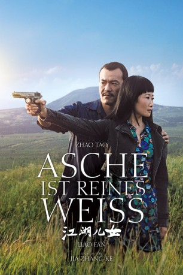

#11829 Asche ist reines Weiß
Alternativ: Ash Is Purest White (Englischer Titel)
 
 IMDB-Wertung: 7.1 / 10
IMDB-Wertung: 7.1 / 10  Metascore: 85
Metascore: 85 
Die chinesische Millionenstadt Datong im Jahr 2001: Bin (Liao Fan) ist der lokale Mafiaboss und regiert die Stadt unangefochten, wobei er besonderen Wert auf Loyalität, Gerechtigkeit und Rechtschaffenheit legt. Doch eines Tages werden er und seine Freundin Qiao (Zhao Tao), die aus einfachen Verhältnissen stammt, von einer aufmüpfigen rivalisierenden Jugendgang in einen Hinterhalt gelockt. Kurz bevor diese Bin zu Tode prügeln können, zieht Qiao eine Waffe und kann die Motorrad-Kids vertreiben. Auf Waffenbesitz steht in China jedoch eine lange Haftstrafe, so dass sie fünf Jahre absitzen muss und während der ganzen Zeit im Gefängnis hat sie Bins Namen nicht einmal erwähnt oder ihn verraten. Als Qiao endlich aus dem Gefängnis kommt, macht sie sich auf die Suche nach Bin, der mittlerweile angeblich in seiner Heimatstadt Fengjie lebt...
Jahr: 2018
Dauer: 135 Minuten
FSK: 12
Land: China Studio: Neue Visionen FilmverleihTonspuren:
Untertitel: Deutsch,
Auflösung: 1080p (1920x1040) Größe: 7905 MB
Genre: Drama, Krimi, Liebe
Regisseur: Zhangke Jia
Drehbuch: Zhangke Jia
Soundtrack: Giong Lim
Darsteller:
- Tao Zhao als Qiao
- Fan Liao als Bin
- Yi'nan Diao als Lin Jiadong
- Jiali Ding als Woman on boat
- Zijian Dong als Policeman in Fengjie
- Xiaogang Feng als
- Zheng Xu als Man from Karamay (man on train)
- Yi Zhang als Second man in Fengjie restaurant
- Jiamei Feng als
- Kang Kang als
- Xuan Li als Li Xuan
- Casper Liang als Lin Jiayan
- Min Liu als Er Yong
- Yuan Wenqian als
- Yibai Zhang als First man in Fengjie restaurant
Datei: X:\2018(A-F)\Asche ist reines Weiß (2018, FSK12, 1920x1040).mkv seit 01.10.2019
Festplatte: HD 2017(A-Z)-2018(A-F)
 Es gibt insgesamt 151 Filme in der Gruppe '2018(A-F)'
Es gibt insgesamt 151 Filme in der Gruppe '2018(A-F)'